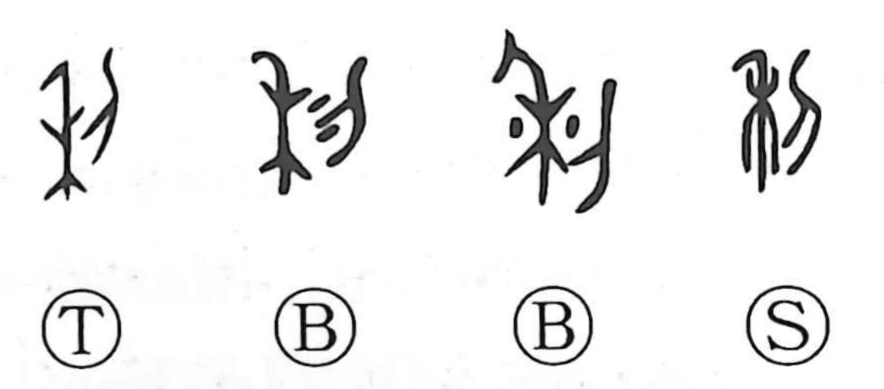

利

Kun: kiku, kikasu | On: ri
profit ・ advantage ・ benefit ・ sharp ・ effective
Explanation
This character combines 禾, the grain plant, with 刀/刂, a blade. It pictures cutting down grain with a sharp edge; from the harvest and the gain that comes of it, the sense of profit and advantage arose. The Shuowen glosses it as sharp, drawing on the keen cutting blade, and from there the meanings broadened to sharp and quick. In Japanese it is read kiku, to be effective, as in hidarikiki left-handedness and kuchikiki intercession or influence.